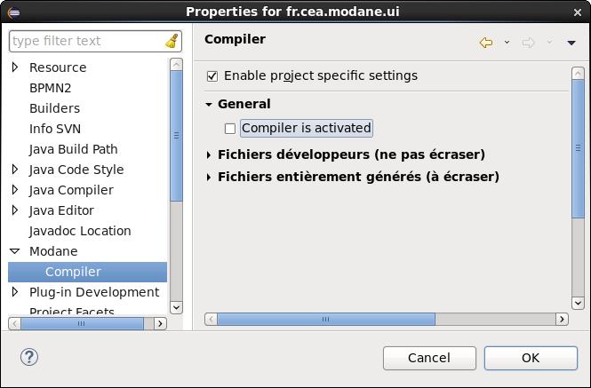

Lors de la génération de code depuis les fichiers '.uml' provenant de Magicdraw, il est possible de générer les fichiers '.modane' en sélectionnant l'option dans la boite de dialogue. Le générateur crée un fichier par package du modèle. Les fichiers sont nommés '__<nom_de_package>.modane'. Ils sont écrasés à chaque génération. Si vous souhaitez effectuer des modifications/évolutions sur un de ces fichiers, il est conseillé de le renommer sans le préfixe '__' afin d'éviter qu'il soit écrasé.
Il est également possible de créer des fichiers avec l'extension '.modane' ne provenant pas de la génération via le menu File>New>File. Les fichiers sont immédiatement pris en charge par Modane pour l'édition, la compilation et la génération de code.
La mise à jour du modèle Magicdraw depuis les fichiers '.modane' n'est pas possible.
Performances
Si votre projet C++ est configuré pour compiler automatiquement dans Eclipse, il est possible que vous rencontriez des problèmes de performances lors de l'édition d'un fichier Modane. En effet, à chaque sauvegarde de votre fichier, Modane va générer le code C++ correspondant, ce qui va entrainer la compilation C++. Pour éviter cela, vous devez désactiver temporairement le compilateur Modane, ce qui stoppera la génération de code C++. Pour ce faire, allez dans le menu Project>Properties, dans l'onglet Modane>Compiler et désactivez l'option 'Compiler is activated' (si nécessaire activez 'Enable project specific settings').
